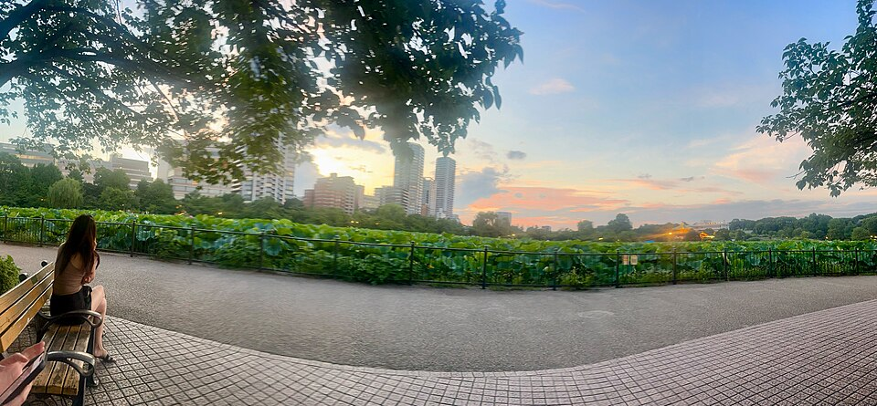
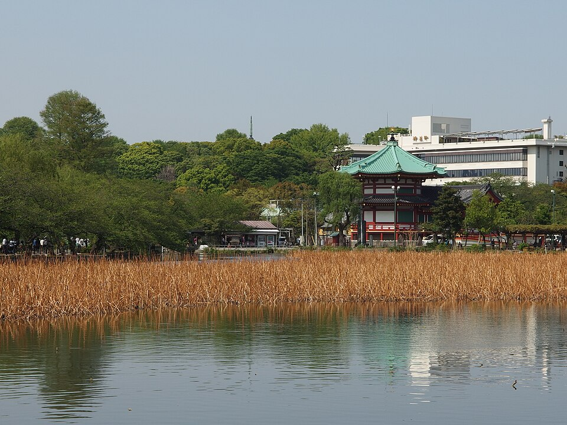
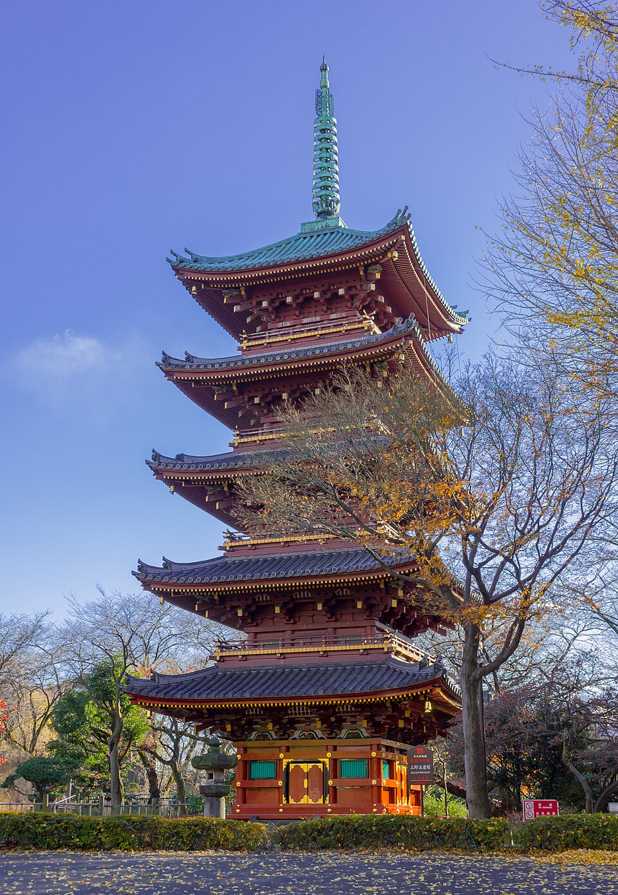
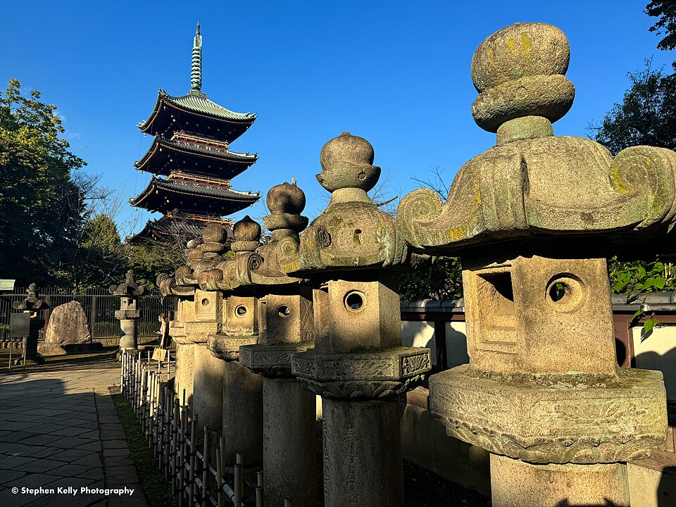

Три разных места: Asakusa, Ueno, Ryogoku
Расстояния пешком
| Отель → парк Ueno (пруд) | 2,1 км, ~29 мин |
| Отель → музеи Ryogoku | 3,0 км, ~40 мин (поезд 4 мин) |
| Отель → пагода Senso-ji | 3,7 км, ~49 мин (Tsukuba Express 5 мин) |
| Музеи Ryogoku → пагода Senso-ji | ~1,5 км, ~19 мин через мост Azuma |
| Пагода Senso-ji → пруд Ueno | 2,9 км, ~39 мин (метро Ginza line 7 мин) |
| Музеи Ryogoku → пруд Ueno | 3,9 км, ~52 мин - не рядом |
Храм Senso-ji и большая пагода
Самый старый храм Tokyo. Красные ворота Kaminarimon с огромным фонарём, торговая улица Nakamise, главный зал и большая пятиярусная пагода, ~48 м (1973, бетон, ja Wikipedia). Рядом река Sumida и мост Azuma. Парка с прудом здесь нет.


Парк Ueno: пруд Shinobazu и своя пагода
Большой парк. Пруд Shinobazu с храмом Bentendo на островке (там ты гулял вечером 13.10). У святилища Toshogu - своя пятиярусная пагода, поменьше и старинная: сейчас она стоит на территории зоопарка, но смотрит на дорожку к Toshogu (ja Wikipedia), видна снаружи. В этом же парке Национальный музей (Tokyo National Museum). Рядом рынок Ameyoko.



.jpg){kind=link}



.jpg){kind=link}
Музеи: Edo-Tokyo и землетрясения 1923
За рекой Sumida, к востоку от отеля. Edo-Tokyo Museum (здание на опорах), музей 1923 в парке Yokoamicho, старый сад Kyu-Yasuda с прудом, зал сумо Kokugikan. Парк Ueno отсюда далеко - почти 4 км.